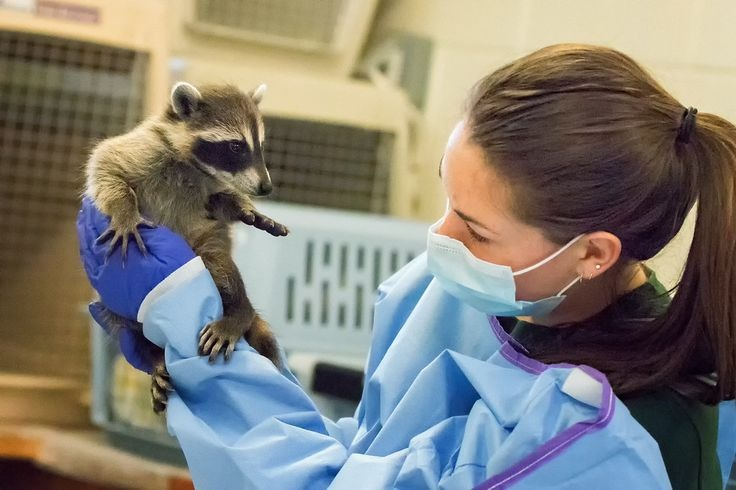
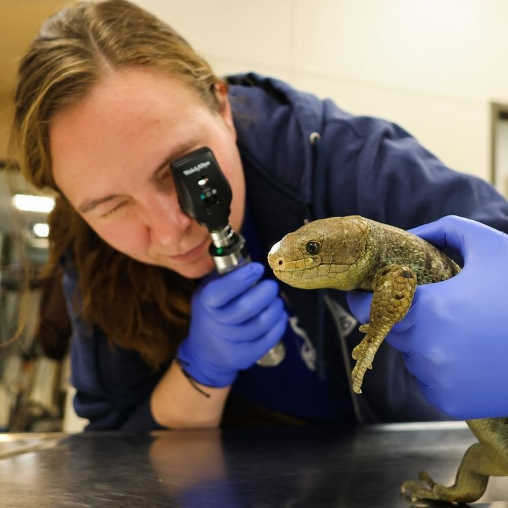

Unifique a rotina da sua clínica: do exame físico e prescrição com CRMV automático para cães e gatos, até o controle detalhado de recintos, fotoperíodo e iluminação UVB para aves, répteis e animais exóticos.
Digital & Sem Papéis
Tempo de Espera na Fila
Médico, Manejo & Gestão

Enquanto os sistemas comuns de pet shop tratam todo animal da mesma forma, o ZooMed foi desenhado especificamente para a complexidade clínica e as necessidades de bem-estar de espécies convencionais e não convencionais.
Anamnese organizada, registro de temperatura, frequência cardíaca, respiratória e cálculo de doses com emissão de receituário legalizado com CRMV.
O único sistema com registro de fotoperíodo, parâmetros de lâmpada UVB, umidade de terrário, substrato e enriquecimento ambiental cognitivo e sensorial.
Separação clara entre a conduta clínica privativa do Médico Veterinário e as orientações de manejo do Biólogo/Adestrador (Regra RN02).
Fila do dia interativa com triagem instantânea, visualização do status do paciente e busca ultra-rápida de tutores por CPF ou nome do pet.
Explore os fluxos de trabalho projetados para garantir máxima agilidade na recepção, precisão no consultório e excelência no manejo de animais exóticos.
Projetado para dar agilidade à consulta médica veterinária, permitindo registrar queixas, exame clínico de órgãos vitais e condutas terapêuticas com rastreabilidade total.
1. Amoxicilina + Clavulanato 500mg: 1 comprimido a cada 12h por 10 dias.
2. Meloxicam 2mg: 1 comprimido ao dia durante 4 dias após alimentação.
Mais de 80% dos problemas de saúde em aves, répteis e roedores decorrem de erros ambientais. O ZooMed possui ferramentas dedicadas para adequação de habitat e comportamento animal.
Troncos de cortiça rugosa para escalada, foliage densa para segurança e forrageamento de folhas escuras frescas.
Controle sem atritos: acompanhe exatamente quem chegou, quem está em triagem, em consulta clínica e quem já foi liberado, sincronizado instantaneamente entre a recepção e os consultórios.
| Horário | Animal / Espécie | Tutor | Profissional | Status |
|---|---|---|---|---|
| 09:30 | Pipoca (Calopsita) | Fernanda Lima | Lucas Mendes | Em Atendimento |
| 10:00 | Max (Border Collie) | Roberto Alves | Dr. Carlos Eduardo | Aguardando |
| 10:30 | Freya (Gato Siamês) | Camila Rocha | Dr. Carlos Eduardo | Finalizado |
| 11:00 | Nagini (Corn Snake) | Felipe Ramos | Lucas Mendes | Aguardando |
Fidelize seus clientes e garanta que nenhum reforço passe despercebido. Gestão de vacinas virais, bacterianas e vermifugação com histórico vitalício.
Paciente: Luna (Golden Retriever) • Tutor: Rodrigo Mendes
Tome decisões baseadas em dados em tempo real: volume de atendimentos diários, taxa de ocupação dos consultórios e distribuição por tipos de espécies.
O sistema adapta interfaces, formulários e permissões de acordo com o perfil de quem está operando, respeitando normas éticas e tornando o trabalho de cada membro muito mais produtivo.
Emissão ágil de receitas oficiais formatadas, com CRMV impresso por exigência do conselho, dosagens e orientações posológicas claras.
Registro completo de queixa, anamnese e parâmetros vitais (temperatura, FC, FR, TPC e peso) com histórico unificado do paciente.
Controle preciso de vacinas, vermífugos e tratamentos profiláticos com agendamento da próxima dose.
Garantia de que apenas o médico veterinário habilitado assina o receituário e responde pelos procedimentos clínicos.

Manter animais não convencionais em ambiente doméstico exige parâmetros técnicos muito rígidos. O módulo de manejo do ZooMed transforma a consulta em uma verdadeira consultoria de adequação ambiental e nutricional.
| Funcionalidade / Capacidade | Softwares Veterinários Comuns | ZooMed Fauna & Domésticos |
|---|---|---|
| Suporte a Animais Silvestres & Exóticos | Apenas campos genéricos de "observação" | Campos nativos de recinto, UVB, fotoperíodo e dieta específica |
| Emissão de Receita com CRMV Obrigatório | Muitas vezes texto livre sem travas éticas | Validação rigorosa com assinatura e CRMV automático |
| Segregação de Perfis (Médico vs Adestrador/Biólogo) | Todos têm o mesmo tipo de tela genérica | Módulos independentes com senhas e competências separadas |
| Fila do Dia com Triagem por Espécie | Agendas estáticas em lista simples | Monitoramento visual em tempo real com status integrado |
| Emissão do Guia Oficial de Manejo | Inexistente no mercado veterinário | Guia oficial padronizado com impressão em 1 clique |
Veja como a automação de prontuários, receitas com CRMV e emissão do guia de manejo reduzem o tempo burocrático e aumentam a receita e a satisfação dos tutores.
Economizadas por semana em burocracia e anotações manuais
Redução estimada no tempo de espera do tutor na recepção
Aumento no índice de retorno de tutores com o Guia de Manejo impresso
Construído sob os mais altos padrões corporativos de estabilidade, segurança e integridade de dados para ambientes médicos veterinários de missão crítica.
Backend de alta performance com arquitetura em camadas desacoplada (Controller, Service, Repository, DTOs e Exceptions personalizadas).
Modelagem relacional consistente com transações atômicas, isolamento de dados e chaves estrangeiras que impedem inconsistências cadastrais.
Containerização completa do backend e do banco de dados com script de saúde (healthcheck) e inicialização com um único comando.
Pipeline com build, compilação de testes automatizados, empacotamento JAR e criação de imagem Docker para deploy contínuo.
Um ecossistema moderno que une a precisão médica ao respeito e rigor técnico no manejo de pets convencionais e fauna silvestre.